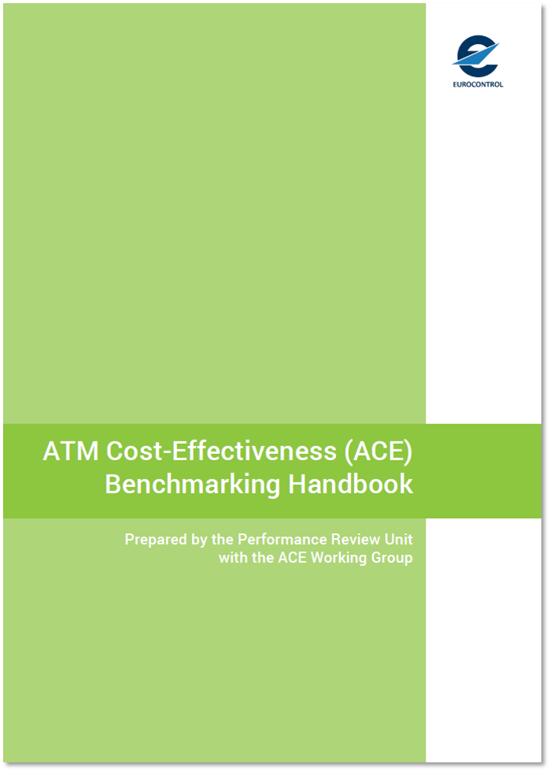

ACE Handbook
1 Introduction

1.1 About this report
This document provides reference material that accompanies the Air Traffic Management Cost-Effectiveness (ACE) annual benchmarking reports, which are commissioned by EUROCONTROL’s independent Performance Review Commission (PRC).
Starting with the ACE 2020 cycle, the information previously contained in the ACE reports have been reorganised in the following manner:
The ACE analytical report continues to provide a high level analysis of economic and financial cost-effectiveness performance in a given year at Pan-European system and ANSP level. It also analyses changes in ATM/CNS cost-effectiveness performance over the past 5 years and presents forward-looking information for the next 5 years. A particular focus is put on the three main economic drivers of cost-effectiveness (productivity, employment costs and support costs).
The ACE handbook (this document) provides general information on the scope of the analysis, outlines the processes involved in the production of the report, and includes explanations on the factors affecting performance and indicators used in the ACE benchmarking analysis.
ANSP factsheets and individual ANSP short reports (previously Part II of the ACE reports) are now only published on the web.
The ACE Dashboard continues to provide interactive functionalities that allow users to design and customise original analyses and presentations based on ACE data (starting in 2003 and updated one a year). The dashboard also gives access to individual ANSP short reports.
Digital versions of all the documents listed above as well as the ACE dashboard can be accessed at the following address: https://ansperformance.eu/economics/ace-overview/
1.2 Scope of analysis
The ACE report is based on information provided by ANSPs in compliance with Decision No. 88 of the Permanent Commission of EUROCONTROL (Permanent Commission for the Safety of Air Navigation 2015), which makes annual disclosure of ANS information mandatory, according to the Specification for Economic Information Disclosure (SEID) (EUROCONTROL 2012), in all EUROCONTROL Member States. From a methodological point of view, the analysis focuses on gate-to-gate ATM/CNS provision costs and does not address performance relating to:
oceanic ANS;
services provided to military operational air traffic (OAT); or,
airport (landside) management operations.
Similarly, the costs associated with other entities such as National Supervisory Authorities (NSAs), national MET providers and the EUROCONTROL Agency (although mentioned for completeness purposes in the introduction of the report) are not taken into account in the calculation of the ACE cost‐effectiveness indicators (see Figure 6.1 for more details).